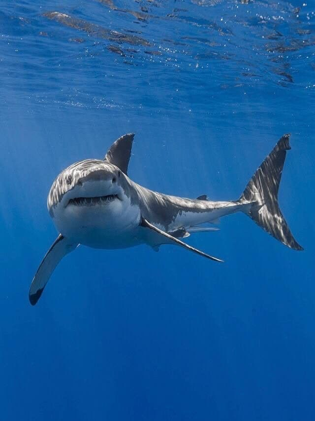
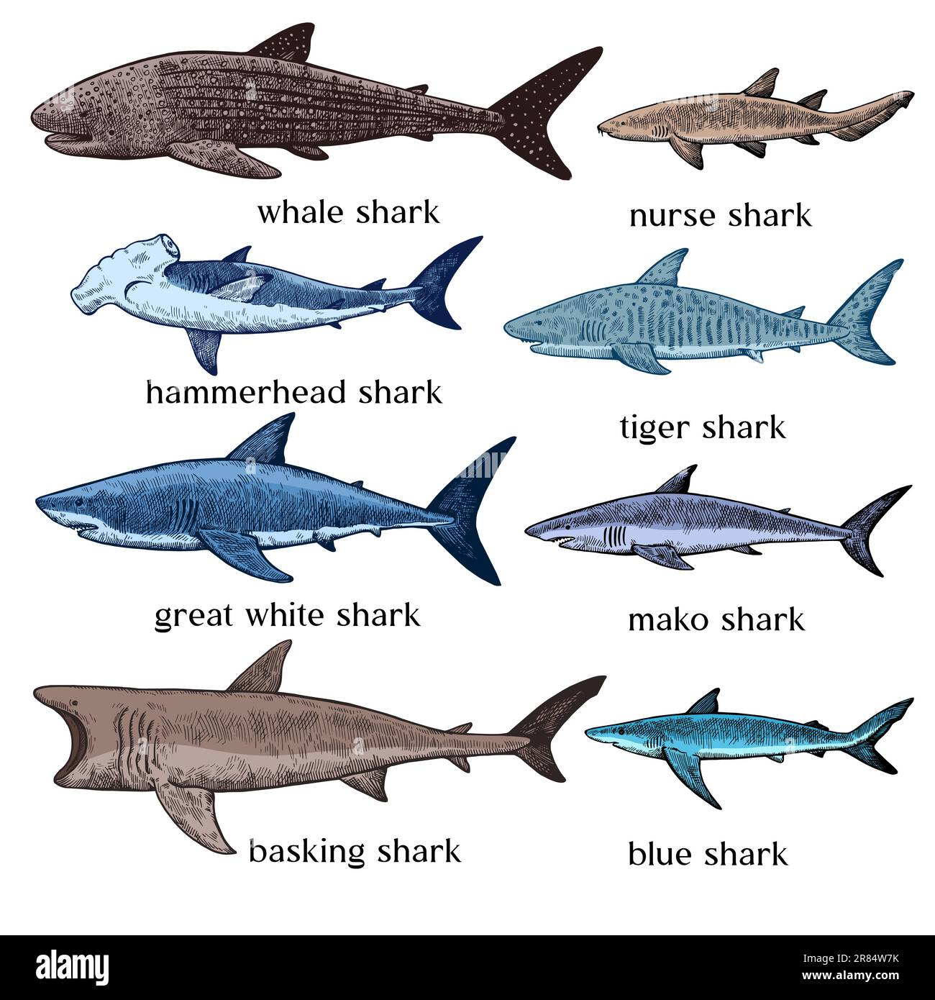

Sharks are marine animals classified as cartilaginous fish, meaning their skeletons are made of cartilage instead of bone. They belong to a group called Chondrichthyes and have existed for over 400 million years, making them older than dinosaurs. Sharks are known for their streamlined bodies, multiple rows of sharp teeth, and strong sense of smell, which helps them detect prey from long distances. There are more than 500 species of sharks, ranging from the small dwarf lanternshark to the large whale shark, which is the biggest fish in the world. Most sharks are predators that play an important role in maintaining the balance of ocean ecosystems by controlling populations of other marine animals. Despite their reputation, shark attacks on humans are very rare, and many shark species are currently threatened by overfishing and habitat loss.

The whale shark is the largest fish in the world, growing up to about 12 meters (40 feet) long or more. Despite its huge size, it is a gentle filter feeder that eats plankton, small fish, and tiny sea organisms. Whale sharks are known for their distinct white spots and stripes on their dark bodies. They usually live in warm tropical oceans and are harmless to humans.
The nurse shark is a slow-moving, bottom-dwelling shark commonly found in shallow coastal waters and coral reefs. It feeds mostly at night on small fish, crustaceans, and mollusks. Nurse sharks can rest on the ocean floor because they can pump water over their gills without swimming. They are generally calm and not dangerous to people.
Hammerhead sharks are easily recognized by their hammer-shaped heads, called a cephalofoil. This unique shape helps improve their vision and ability to detect electrical signals from prey. They often swim in groups called schools, especially when young. Hammerheads usually eat fish, squid, and stingrays.
Tiger sharks are large predators known for the dark vertical stripes on their bodies, similar to a tiger’s pattern. They have a very varied diet, eating fish, turtles, birds, and sometimes even non-food objects. Tiger sharks live in tropical and warm oceans and are considered one of the ocean’s top predators.
The great white shark is one of the most famous shark species and is known for its powerful body and sharp teeth. It can grow up to about 6 meters long. Great whites usually hunt seals, sea lions, and large fish. They are found in cool coastal waters around the world and play an important role in the marine food chain.
The mako shark is known as the fastest shark in the ocean, capable of swimming at speeds of about 60 km/h (37 mph). It has a slender body and pointed snout, which helps it move quickly through the water. Mako sharks feed on fish such as tuna and swordfish and are often found in open ocean waters.
The basking shark is the second-largest shark species after the whale shark. Like the whale shark, it is a filter feeder that eats plankton by swimming with its large mouth open. Basking sharks are usually slow and harmless, often seen near the surface of the water in cooler oceans.
Blue sharks are named for their deep blue color and long, slender bodies. They are strong swimmers that travel long distances across the ocean. Blue sharks mainly eat fish and squid and are commonly found in deep, open waters. They are one of the most widely distributed shark species in the world.